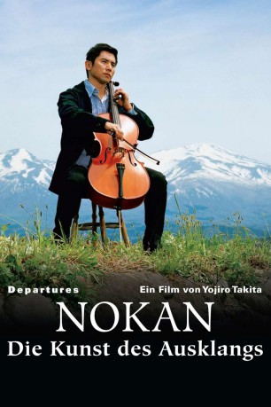

#1866 Nokan - Die Kunst des Ausklangs
Alternativ: Departures (Englischer Titel)
Auszeichnungen: 1 Oscars gewonnen
 
 IMDB-Wertung: 8.1 / 10
IMDB-Wertung: 8.1 / 10  Metascore: 68
Metascore: 68 
Der Cellist Daigo verliert seinen Posten beim Tokioter Symphonie-Orchester, als der Sponsor aussteigt. Da er die Raten seines Instruments nun nicht mehr zahlen kann, gibt er es zurück und kehrt mit seiner Frau in seine Heimat im ländlichen Norden Japans zurück. Bei der Arbeitssuche stößt Daigo auf die Anzeige eines auf Reisen spezialisierten Unternehmens und wird zu guten Bedingungen eingestellt. Da erfährt er die wahre Natur des Geschäfts: Er soll die Leichen Verstorbener auf die letzte Reise, sprich, die Beerdigung vorbereiten.
Jahr: 2008
Dauer: 130 Minuten
FSK: 0
Land: Japan Studio: KOOL FilmdistributionTonspuren:
Untertitel:
Auflösung: 1080p (1920x1080) Größe: 6881 MB
Genre: Drama, Musik
Regisseur: Yôjirô Takita
Drehbuch: Kundô Koyama
Soundtrack: Joe Hisaishi
Darsteller:
- Masahiro Motoki als Daigo Kobayashi
 Tsutomu Yamazaki als Ikuei Sasaki
Tsutomu Yamazaki als Ikuei Sasaki- Ryôko Hirosue als Mika Kobayashi
- Kazuko Yoshiyuki als Tsuyako Yamashita
- Kimiko Yo als Yuriko Uemura
- Takashi Sasano als Shokichi Hirata
- Tetta Sugimoto als Yamashita
- Tôru Minegishi als Yoshiki Kobayashi
- Tatsuo Yamada als Togashi
- Yukari Tachibana als
- Tarô Ishida als Sonezaki
- Sanae Miyata als Naomi Togashi
- Ryôsuke Ôtani als Tomeo's father
- Mitsuyo Hoshino als Kazuko Kobayashi
- Tatsuhito Okuda als
- Miyako Hattori als Grandmother
- Mari Hayashida als
- Shinji Hiwatashi als
- Norichika Iimori als
- Yôko Imamoto als
- Kei Kawai als
- Yûji Kido als Assistant Director
- Hiroyuki Kishi als Tomeyo's Uncle
- Yukimi Koyanagi als
- Mina Kudo als
- Yûki Mashita als
- Kenzou Ryu als
- Pablo Sacco als Instrument dealer
- Sadami Sakamoto als Orchestra Manager
- Takejyu Sato als Togashi's Relative
- Sayuri Shirai als Tomeo
- Genjitsu Shu als
 Tarô Suwa als Angry father at embalming session
Tarô Suwa als Angry father at embalming session- Ryôichi Suzuki als
- Yukiko Tachibana als
- Masaaki Takarai als Miyuki's Boyfriend
- Takao Toji als
- Rin Uchida als Young Daigo
- Atsushi Yamanaka als
- Miki Hayashida als Okuyamakenomusume , uncredited
Datei: X:\HD-Eastern-Modern(N-Z)\Nokan - Die Kunst des Ausklangs (2008, FSKo.Al., 1920x1080).mkv seit 28.08.2015
Festplatte: HD Eastern+Western
 Es gibt insgesamt 76 Filme in der Gruppe 'HD-Eastern-Modern(N-Z)'
Es gibt insgesamt 76 Filme in der Gruppe 'HD-Eastern-Modern(N-Z)'